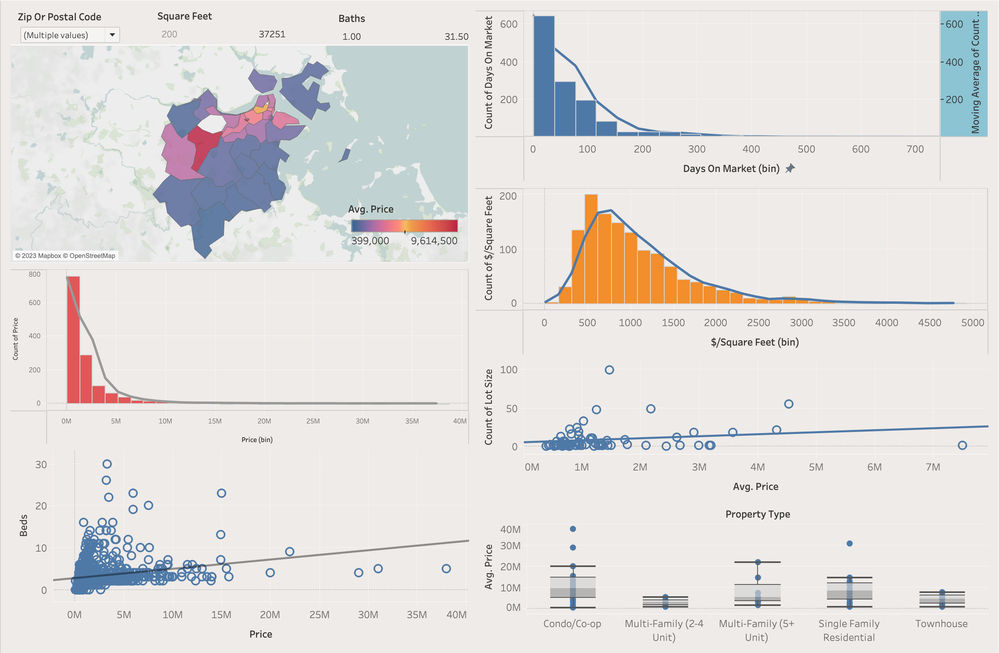

This project involved gathering shot data from an soccer match using the Fotmob API,
the project using the shots expected goals to simulation
the match outcome to see based on the quaitliy of shots both teams had to see how the mostly likely outcome based on an simualtion


This project involved scraping wiki to get the components of SPY and
using google cloud to automating getting the price data for the ETF components
and creating an dashboard to view the performance of the different components for the ETF
.

This project involves gathering Real Estate Data using the RedfinScraper packages, the data is
used to do an property analysis for boston housing.